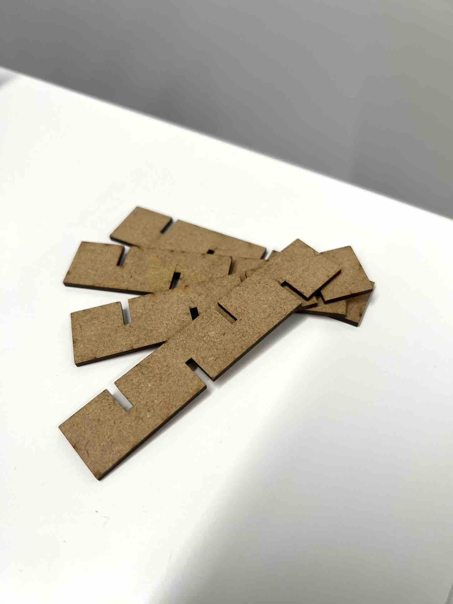
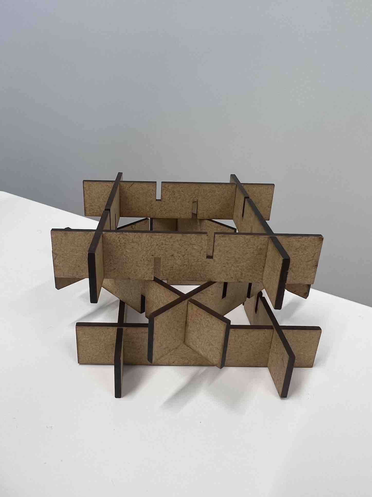
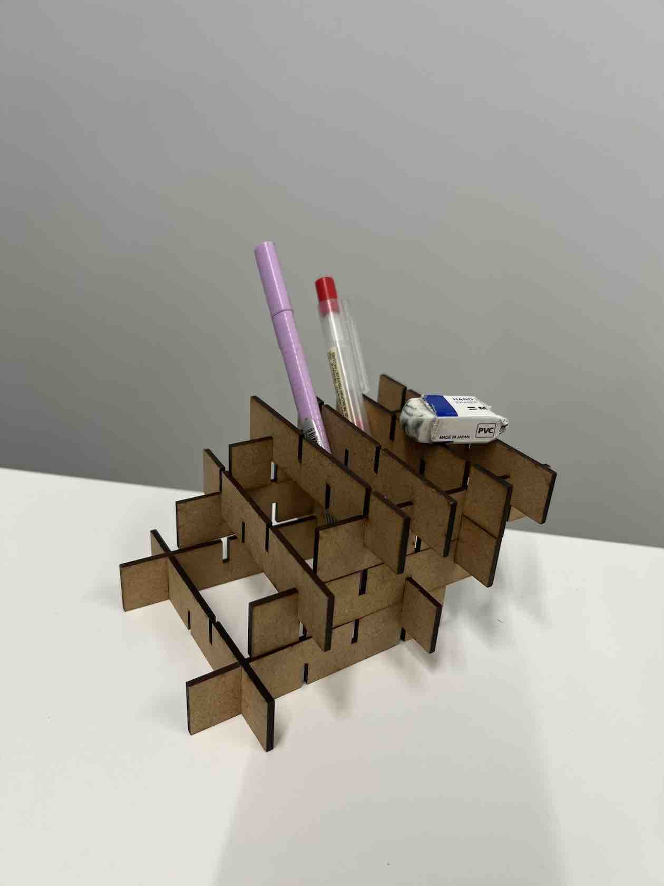

自由に組み立てるキャンドルスタンド
1.構想スケッチと完成品
写真１

写真２

写真３

写真４

2.設計ファイル
キャンドルスタンド dxfファイル
3.作品の説明
この作品は、写真２のような小さな木の板を何枚も組み合わせることで、完成するキャンドルスタンドです。写真３のように、4枚を四角に組み立てたものを積み上げてキャンドルを中に置くことで、板と板の隙間から明かりを放つキャンドルスタンドとなります。
また、この作品は組み方を変えることで、キャンドルスタンド以外の物にすることもできます。（例 写真４のペン立て）
4.この作品を制作した理由
私は何かひと工夫施されたものを作りたいと思い、この自由に組み立てるキャンドルスタンドを思いつきました。
このキャンドルスタンドは、同じ形をした長方形の板を自由に組み合わせることで完成します。このように自由に形を作れるようにしたのは、自分が使いたい用途や見た目に合わせて形状を変化させることができたら、面白い上に実用的なのではないかと考えたからです。